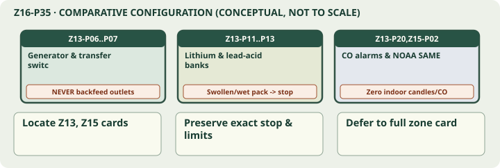

Z16-P35 · Field reference atlas · New manuscript
Household Outage Power, Battery, Transfer Switch and Alert Gear Index
Synthesize safe portable-power, generator transfer-switch, lithium-battery thermal-runaway, and NOAA weather-radio equipment rules from Z13 and Z15.
When it applies · Residential power-outage readiness and severe-weather alerting.
Equipment · Full offline reader (Z13, Z15), primary zone cards, and local emergency and agency references.

Actions
- Power household circuits from a portable generator ONLY through a licensed-electrician-installed transfer switch or approved interlock kit—NEVER backfeed a generator into a wall or dryer outlet (Z13-P07), keeping the unit at least 20 ft outdoors (Z13-P06).[A01, U04, C06]
- Inspect portable lithium-ion power stations for swelling, overheating, or flood submersion, storing and charging away from exits and combustibles (Z13-P11..P13); ventilate flooded lead-acid charging areas for hydrogen gas.[A01, U04]
- Keep a battery, hand-crank NOAA Weather Radio with SAME county alerts, battery-backed CO, smoke alarms on every level, and dry flashlights (avoiding open candles) ready for multi-day outages (Z13-P20, Z15-P02).[A09, U05, D01]
Failure recognition · Backfeeding household wiring electrocutes utility linemen, while charging damaged lithium packs or burning unattended candles ignites structure fires.[U04, U05]
Verify · Transfer switch, heavy outdoor GFCI cord, intact battery packs, tested CO alarms, and NOAA radio readiness are confirmed.[U04, U05, D01]
Stop or change course · Stop using any generator within 20 ft of openings, any swollen, wet lithium pack, or any wet electrical panel after flooding.[U04, U20]
Evidence and editorial notes
- A01 · FEMA / Ready.gov · Make a Plan (current web edition)
- Section: Cross-zone emergency prioritization and stop-threshold preservation · Conditions: Synthesizing Z01-Z15 emergency decision summaries in Z16
Support: Condensed emergency references must retain exact life-safety priorities, evacuation triggers, and call-911 thresholds from upstream primary guidance.
Limitations: Any summary omitting an upstream exception, stop rule, or specialist hold is invalid and must defer to the full zone card. · Conflicting evidence: None noted.
Editorial note: Governs Z16 emergency cross-reference fidelity. · Specialist reviewer: Emergency management and editorial QA reviewer
Primary source · checked 2026-11-24 - A09 · Minnesota Poison Control System · Poison Help 1-800-222-1222 and Regional Plant/Mushroom Guidance (Current web edition)
- Section: Consolidated emergency communication, reporting, and referral directory · Conditions: Cross-zone emergency escalation across Z01, Z05, Z06, Z07, Z10, Z11, Z13, Z15
Support: Emergency lookup tables separate 911 life-threat activation, Poison Help 1-800-222-1222, utility leak/outage lines, and DNR wildlife/TIP reporting.
Limitations: Cell coverage fails in remote areas; pre-plan offline communication and backup evacuation routes. · Conflicting evidence: None noted.
Editorial note: Standardizes Z16 emergency contact index. · Specialist reviewer: EMS and emergency communications reviewer
Primary source · checked 2026-11-25 - C06 · CPSC · CPSC Warns of Generator, Carbon Monoxide and Fire Hazards Ahead of Hurricane Season (2026 seasonal agency guidance)
- Section: Prevent CO poisoning > Portable generators · Conditions: Portable fuel-driven generator during an outage
Support: Use outdoors at least 20 feet from the home with exhaust directed away from buildings.
Limitations: Wind eddies, overhanging eaves, and open windows can still draw exhaust toward occupied structures. · Conflicting evidence: None; 20 ft is a minimum floor, not a guarantee in enclosed alleys.
Editorial note: Anchored numeric separation rule for portable generators only. · Specialist reviewer: Electrical and carbon monoxide safety
Primary source · checked 2026-11-24 - D01 · FEMA / Ready.gov · Be Informed and Multi-Hazard Preparedness (current web edition)
- Section: Be Informed > Local Hazard Assessment, Alerts, and Jurisdiction Mapping · Conditions: Households preparing for regional multi-hazard emergencies
Support: Identify specific local hazards, sign up for county/municipal opt-in alerts alongside WEA/EAS and NOAA Weather Radio, know official evacuation zone labels, and review household plans twice yearly.
Limitations: Emergency warning systems, siren policies, and shelter locations vary strictly by county and municipality. · Conflicting evidence: None; aligns with T14 and T15.
Editorial note: Establishes jurisdiction-specific alert and planning baseline in Z15. · Specialist reviewer: Emergency management specialist
Primary source · checked 2026-11-24 - U04 · FEMA / Ready.gov · Home Fires (current web edition)
- Section: Home Fires > Smoke Alarms, Fire Extinguishers, and Escape Plans · Conditions: Residential fire prevention during outages and supplemental heating
Support: Test smoke alarms monthly on every level and outside sleeping areas, keep two exits clear from every room, store fuels outside living spaces in approved containers, and evacuate immediately if a fire exceeds incipient containment.
Limitations: Candles and improvised indoor flames dramatically elevate outage house-fire deaths. · Conflicting evidence: None; integrates with CPSC CO-alarm rules (C09).
Editorial note: Anchors outage fire prevention, fuel storage, and exit readiness in Z13. · Specialist reviewer: Fire prevention and residential safety
Primary source · checked 2026-11-24 - U05 · US EPA · Private Drinking Water Wells (current web edition)
- Section: Private Drinking Water Wells > Maintenance, Floods, and Testing · Conditions: Households relying on private domestic groundwater wells
Support: Private wells are not regulated by municipal utilities; test water annually (and after any flood, power loss with pressure drop, or plumbing repair) through a certified laboratory and keep wellheads sealed above grade away from runoff and chemicals.
Limitations: Visual clarity or normal taste never proves a private well is free of bacteria, nitrates, or arsenic. · Conflicting evidence: None; aligns with CDC-WELL (W18) and MDH-WELL-HOME.
Editorial note: Core private-well governance and testing cadence in Z13. · Specialist reviewer: Hydrogeology, licensed well contractor, and public health
Primary source · checked 2026-11-24 - U20 · CDC · Safety Guidelines: Returning Home After a Natural Disaster (2026)
- Section: If your home flooded; electrical hazards · Conditions: Flooded structure or wet electrical equipment
Support: Stay away from wet electrical tools or switches and do not operate power while standing in water. Seek qualified clearance before entering or restoring power.
Limitations: Qualified structural, gas and sewage cleanup clearance may also be needed. · Conflicting evidence: See A02 claim audit for boundaries.
Editorial note: Added in A02 to separate a consequential source boundary. · Specialist reviewer: Licensed electrician and public health
Primary source · checked 2026-11-25
Source lineage · New manuscript (Z16 P20 equipment index) · Classification · New manuscript.